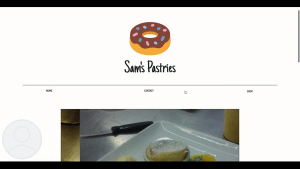
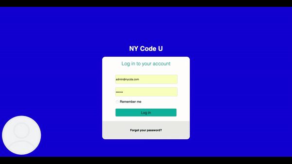

MY PROJECTS
Friendly Bakery
Bakery project displaying information on baked goods items and send item information directly to users email accounts on the backend, using: ruby, Sinatra, HTML, CSS and SendGrid API.
Rumblr

Fullstack simple blog site that enables new user sign up account creation and relevant posts on a topic of their choosing. Tumblr-like blog with Ruby/Sinatra microframework. Features like account creation and authentication/validation, account login process whereby new users can sign up and create/edit posts when session is enabled, view posts made by other users, edit account information and is mobile responsive.
Admin Panel
A fullstack simple administrative panel for a fictitious school whereby an administrator can complete common administrative tasks like create cohorts from courses and assign students and teachers to them.
Key features: Built with Ruby on Rails; Activerecord is used to make all database transactions; All CSS styling; no CSS frameworks implemented User authentification implemented with devise gem. Four
manageable groups: Courses, Cohorts, Instructors, Students. The administrator is able to create, read, update, and delete any item in any group.
Email: admin@nycda.com
Password: 123456
Or create new administrator here.